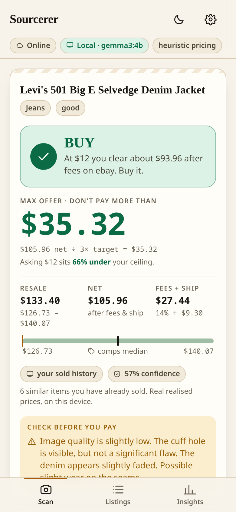
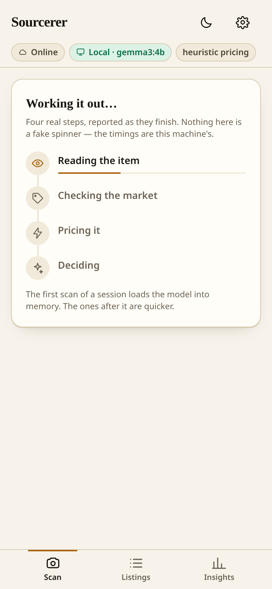
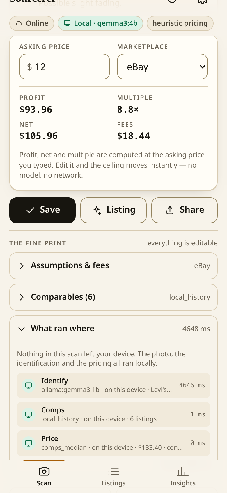
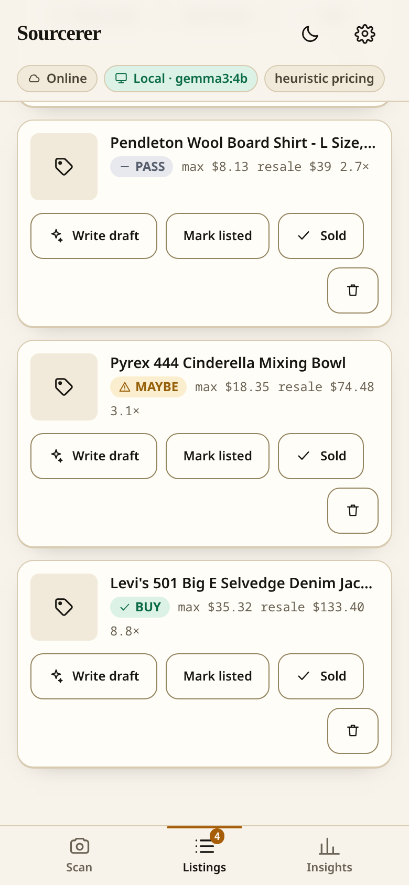
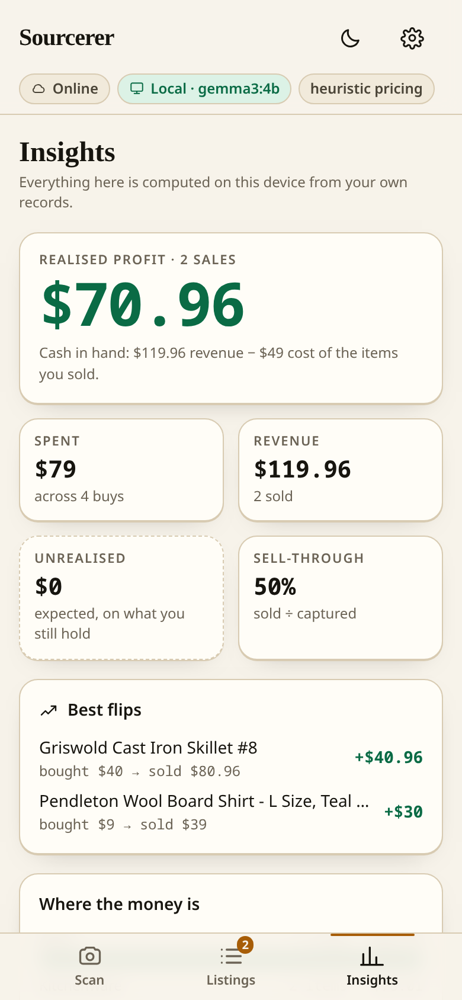

Photograph something in a thrift shop. A local open-weight model reads it, your own sold history and live listings price it, and you get the one number that actually matters: the most you should pay.

A real run on a 2019 laptop with no GPU busy. Verdict in about nine seconds.
The loop a reseller already runs in their head — with the part their memory is bad at, made reliable.
Gemma 3 runs locally on the photo. Brand, model, era, size, flaws, and the keywords a reseller would actually search.
Live listings when there's signal. Your own sold history when there isn't. The app always tells you which one it used.
Fees, shipping, packaging and your target margin, solved for the ceiling. BUY, MAYBE or PASS.
An unedited run: describe the item, type the price on the tag, get a verdict. No network involved.




The decision happens in a basement with no bars, so the model has to be in your hand. That isn't ideology — it's plumbing.
fuzzy · tolerant of bad light · right most of the time
Identification is exactly the job a small open-weight vision model is good at. It doesn't need to be perfect; it needs to be fast, private and free at the margin.
deterministic · unit-tested · identical offline
The money is never left to a language model. Fees, shipping and the max offer are plain functions, so the number you get in a basement equals the number you get online.
Open weights at the core, open source around it. Every one of these sits behind a fallback, so removing any of them degrades the app instead of breaking it.